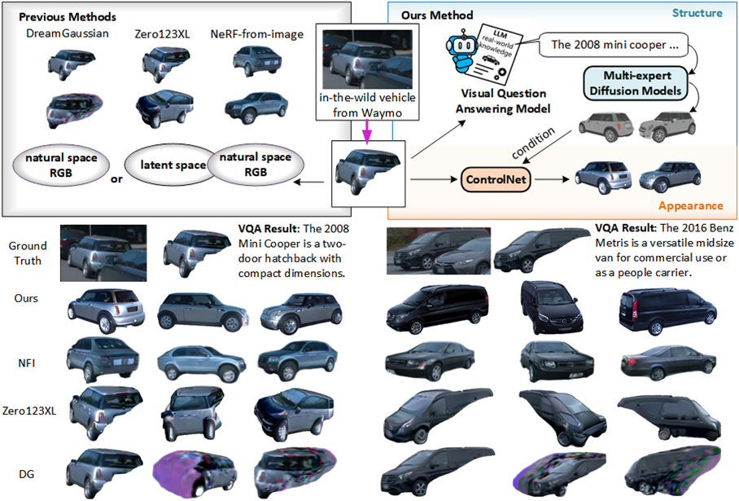
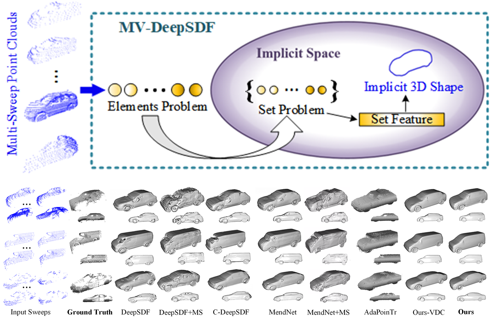
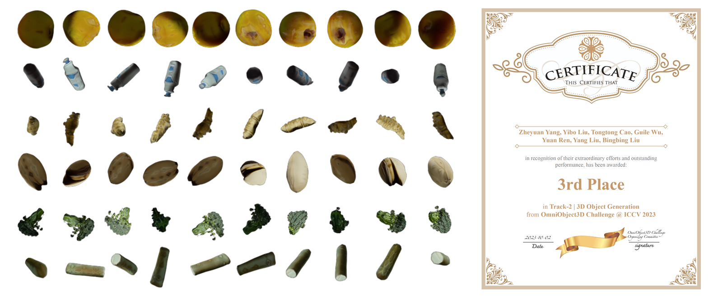
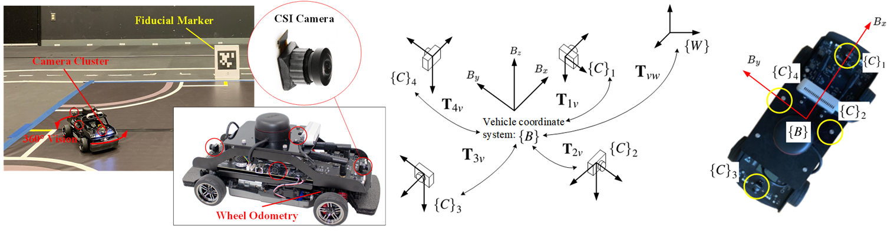
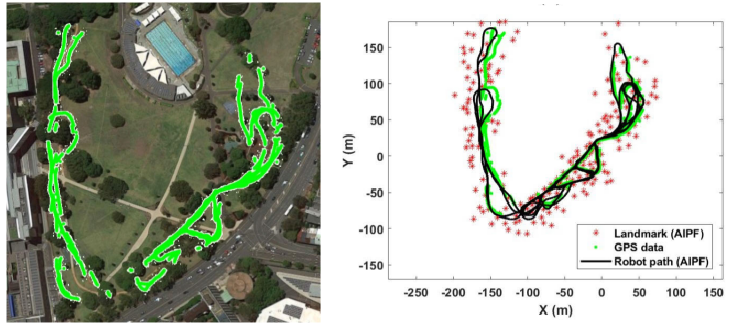
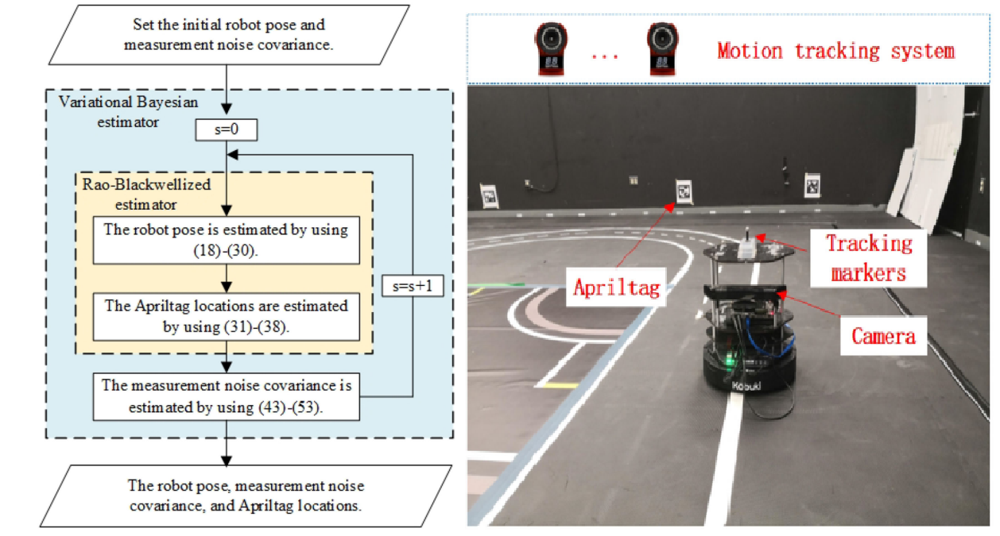
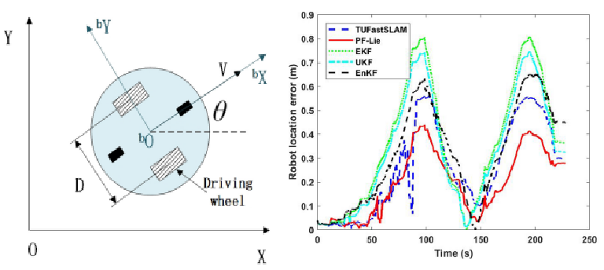

|
Yibo Liu Ph.D. York University, Toronto IEEE Member buaayorklau at gmail.com [GitHub] [Google Scholar] [Resume] [Linkedin] |
I obtained my Ph.D. degree from York University in Jan 2025, supervised by Professor Jinjun Shan. I obtained my bachelor's degree in 2017 and my master's degree in 2020, both at Beihang University (BUAA)..
My Ph.D. study began with research in robotic vision. From Jun. 2022 to Feb. 2025, I have been working as an associate researcher (part-time internship) at Huawei Noah Ark's Lab in Markham, where I conduct product-oriented academic research. My research interests lie in the domains of 3D Computer Vision, AIGC, Vision Language, and Embodied AI.
VQA-Diff (ECCV2024), MV-DeepSDF (ICCV2023), NeurIPS 2024 Workshop Paper (Top-3 winner of OmniObject3D challenge at ICCV2023),
and HIPPo summarize my work.
News
[Jan 2025] L-PR was accepted to IEEE Transactions on Instrumentation & Measurement.[Jan 2025] Defended my Ph.D. thesis & became Dr. Liu.
[Sep 2024] I gave a talk at the University of Toronto (Toronto Computational Imaging Group).
[Sep 2024] I'm invited to give a talk at 3D Vision Workshop (3D 视觉工坊).
[Aug 2024] VQA-Diff was accepted to ECCV 2024.
[Jun 2024] Got an internship offer from Amazon based in Sunnyvale (virtual try-on group).
[Oct 2023] Got 3rd place in the OmniObject Challenge (AIGC) at ICCV 2023.
[Sep 2023] MV-DeepSDF was accepted to ICCV 2023.
Selected Publications
Conferences
|  |
VQA-Diff: Exploiting VQA and Diffusion for Zero-Shot Image-to-3D Vehicle Asset Generation in Autonomous Driving Yibo Liu *, Zheyuan Yang *, Guile Wu, Yuan Ren, Kejian Lin, Bingbing Liu, Yang Liu, Jinjun Shan. ECCV, 2024. [Paper] [Video (YouTube)] [Video (Bilibili)] [Poster] |
|  |
MV-DeepSDF: Implicit Modeling with Multi-Sweep Point Clouds for 3D Vehicle Reconstruction in Autonomous Driving Yibo Liu, Kelly Zhu, Guile Wu, Yuan Ren, Bingbing Liu, Yang Liu, Jinjun Shan. ICCV, 2023. [Paper] [Video (YouTube)] [Video (Bilibili)] [Poster] |
|  |
Learning Effective NeRFs and SDFs Representations with 3D Generative Adversarial Networks for 3D Object Generation Zheyuan Yang*, Yibo Liu*, Guile Wu, Tongtong Cao, Yuan Ren, Bingbing Liu, Yang Liu. NeurIPS 2024 Workshop: Symmetry and Geometry in Neural Representations OmniObject3D Challenge at ICCV 2023 (AI for 3D Content Creation Workshop). [NeurIPS Workshop Poster Page] [ArXiv] [Certificate] [Challenge Introduction] |

|
Application of Ghost-DeblurGAN to Fiducial Marker Detection Yibo Liu, Amaldev Haridevan, Hunter Schofield, Jinjun Shan. IROS, 2022. [Paper] [GitHub] [Video] [Poster] |
|  |
Navigation of a Self-Driving Vehicle Using One Fiducial Marker Yibo Liu, Hunter Schofield, Jinjun Shan. International Conference on Multisensor Fusion and Integration for Intelligent Systems (MFI), 2021. [Paper] [Video] [Poster] |
{kind=link}
{kind=link}
{kind=link}
{kind=link}
{kind=link}
Journals

|
L-PR: Exploiting LiDAR Fiducial Marker for Unordered Low Overlap Multiview Point Cloud Registration Yibo Liu, Jinjun Shan, Amaldev Haridevan, Shuo Zhang. IEEE Transactions on Instrumentation and Measurement (TIM), 2025. [Paper] [GitHub] |

|
Intensity Image-based LiDAR Fiducial Marker System Yibo Liu, Hunter Schofield, Jinjun Shan. RA-L 2022. Presented at IROS 2022. [Paper] [Github] [Video] [Poster] |
|  |
Approximate Inference Particle Filtering for Mobile Robot SLAM Shuo Zhang, Jinjun Shan, Yibo Liu. IEEE Transactions on Automation Science and Engineering (T-ASE), 2024. [Paper] |
|  |
Variational Bayesian Estimator for Mobile Robot Localization With Unknown Noise Covariance Shuo Zhang, Jinjun Shan, Yibo Liu. IEEE/ASME Transactions on Mechatronics (T-MECH), 2022. [Paper] |
|  |
Particle Filtering on Lie Group for Mobile Robot Localization With Range-Bearing Measurements Shuo Zhang, Jinjun Shan, Yibo Liu. IEEE Control Systems Letters, 2024. Presented at ACC 2024. [Paper] |
{kind=link}
Reviewer Service
Conferences: ICLR, NeurIPS, ICRA, IROS, ATSTATS, AIM, ICPRJournals:IEEE Robotics and Automation Letters (RA-L), IEEE Robotics and Automation Magazine (RA-M), IEEE Transactions on Instrumentation and Measurement (TIM), IEEE Transactions on Industrial Electronics (TIE), Robotics and Autonomous Systems (RAS).
Misc
I love fishing, basketball, airsoft guns, and swimming.The template is borrowed from [here].